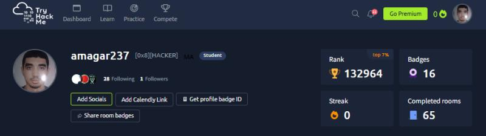
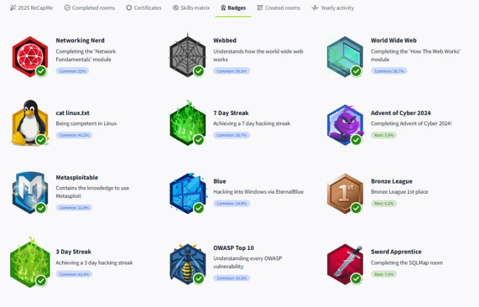
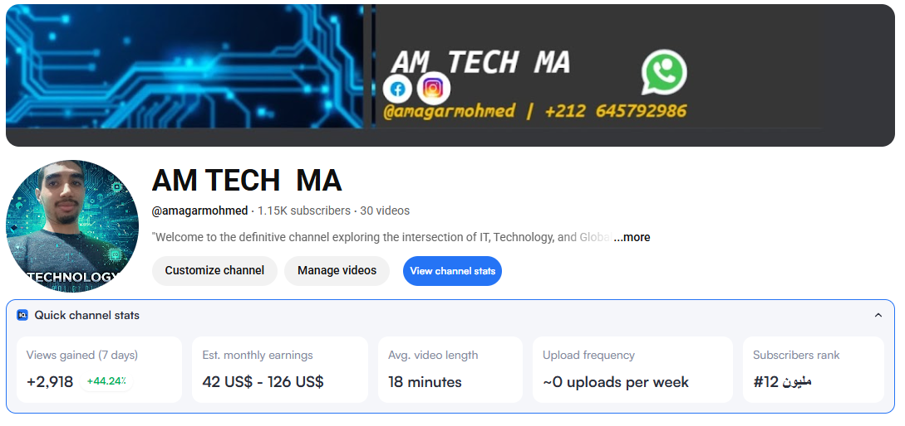

Projects
AM TECH MA - IT Education
TryHackMe | Compétences techniques et Badges de Réseaux et linux et windows fundamentals and sécurité :
Aperçu de mes badges obtenus sur TryHackMe, validant mes compétences en :
1 - Réseaux & Web : Networking Nerd, World Wide Web.
2 - Systèmes : Maîtrise de Linux et Windows Fundamentals.
3 - Outils & Frameworks : Metasploit, SQLMap, et OWASP Top 10.
4 - Événements : Certificat de complétion "Advent of Cyber 2024".


AM TECH MA - IT Education
Créateur de contenu technique – IT & Réseaux | AM TECH MA
YouTube · Indépendant
juin 2025 - aujourd'hui · 10 mois
Création de contenus éducatifs sur les bases de l'informatique, des réseaux et de l'infrastructure digitale.
Partage de notions fondamentales liées au networking, à l'infrastructure IT et aux technologies numériques, tout en développant mes compétences pratiques à travers la recherche, l'expérimentation et la vulgarisation technique.
Cette activité me permet de renforcer mes connaissances, ma discipline d'apprentissage, mes capacités de communication technique et ma compréhension globale des systèmes informatiques.
